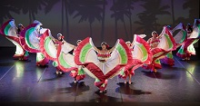
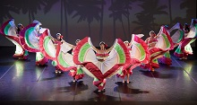
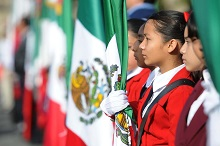
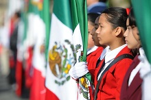
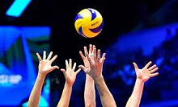
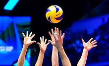
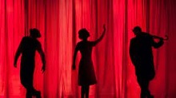
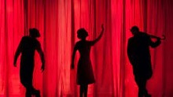
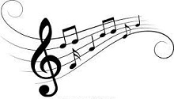
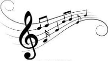

Paraescolares
FUTBOL
Los alumnos juegan futbol en la cancha. A veces se les puede ver calentando y haciendo ejercicios. Tambien tiene su parte teorica y estudian las partes de la cancha, las reglas del futbol, cuales son las faltas, lo que esta y no esta permitido, etc. Tambien, los que pertenecen al selectivo juegan partidos contra otras escuelas. Sin duda alguna un paraescolar.

BASQUETBOL
En este paraescolar, los alumnos juegan en el domo. Se dedican a jugar basquetbol y tiene parte como futbol los de selectivo tienen mas tiempo de dedicacion a la materia, tiene su parte teorica.

DANZA
En el paraescolar de danza los alumnos llevan a cabo increibles coreografias que muestran la cultura que hay en nuestro estado. Tambien, en el paraescolar de danza no se limitan unicamente a hacer bailesitos, sino que tambien tienne una parte teorica y estudian los movimientos, lo que se necesita para bailar y las partes de un escenario, que es el lugar principal en el que se hacen bailes.
 

ESCOLTA
Un paraescolar que es unicamente escolta, y lo unico que hacen es marchar y como toda paraescolar tiene su lado selectivo que son los de hacer y llevar acabo el recorrido en los homenajes eso es lo que implica ser selectivo en esta paraescolar
 

BANDA DE GUERRA
En este paraescolar es similar a musica, solamente que se limitan a utilizar baquetas, tambores y trompetas. Llevan a cabo el manejo de estos instrumentos para hacer presentaciones. Luego los puedes ver en el homenaje tocando sus instrumentos mientras pasa la escolta y implica esa participacion si eres selectivo.


VOLEIBOL
En esta paraescolar es significativamente igual a futbol y basquetbol implica su lado de conocimiento teorico y practico la cual cuando lo llevas a practico es en el momento que eres selectivo y el proposito es que puedes ir a representar a otras escuelas de manera conpetitiva.
 

TEATRO
En el paraescolar de teatro, los alumnos llevan a cabo increibles actuaciones dignas de capitulos de La Rosa de Guadalupe. Los alumnos forman equipos y entre ellos pueden ya sea hacer sus propios guiones e interpretarles o unicamente limitarse a interpretar unos ya hechos, aunque eso les da chance de lograr una mejor actuacion.
 

PINTURA
En la paraescolar de pintura los alumnos hacen mucho conocimiento practico la cual hacen pinturas en cuadros y libretas sin importar si eres selectivo o no.
MUSICA
En el paraescolar de musica los alumnos se dedican a tocar instrumentos desde instrumentos de cuerda como guitarra, violin, bajo, hasta teclados, baterias, etc. Al principio durante el primer semestre puede llegar a ser aburrido ya que durante este primer semestre de musica, unicamente se ve teoria musical, que es un pentagrama, que es un compas, la clave de sol, la clave de fa, la duracion de las notas, silencios, etc. Ya en segundo semestre se pone en practica estos conocimientos, comenzando con ejercicios de solfeo, para posteriormente hacer ejercicios de lectura de partituras para guitarra y piano. Ya en tercer semestre, inician con las partes que componen a una cancion, las cuales son el ritmo, melodia y armonia. Se hacen ejercicios de ritmo, los alumnos tambien podran tocar una melodia con cualquier instrumento y finalmente una armonia. Ya en cuarto semestre, los alumnos formaran equipos y se dedicaran a interpretar una cancion. Ya quinto y sexto semestre es una basura, a menos que seas del selectivo, puesto que si no lo eres lo unico que haras es quedarte en el salon durante media hora viendo como tocan los demas mientras tu te quedas ahi esperando a que el profe te deje salir

 
